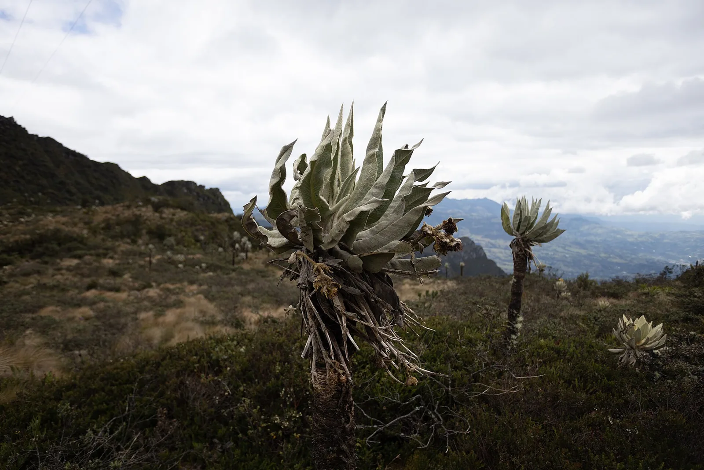
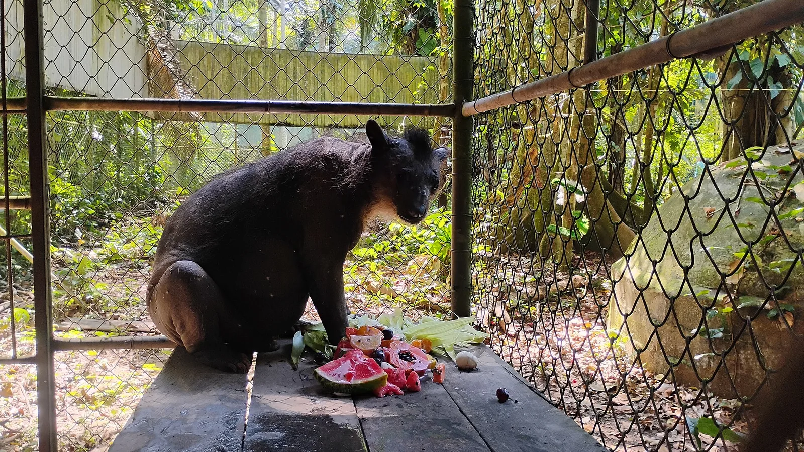

O5 · Oeste
O5 · Westen
O5 · West
Páramo de Sumapaz
En los páramos vi el frailejón, una planta maravillosa que bebe de los ríos voladores para llevarlos a la tierra. Crece apenas un centímetro por año, y entre ellos vi al oso de anteojos.
In den Páramos sah ich den Frailejón, eine wunderbare Pflanze, die aus den fliegenden Flüssen trinkt, um sie zur Erde zu bringen. Er wächst kaum einen Zentimeter im Jahr, und zwischen ihnen sah ich den Brillenbären.
In the páramos I saw the frailejón, a marvellous plant that drinks from the flying rivers to carry them down to the earth. It grows barely a centimetre a year, and among them I saw the spectacled bear.
Información
Colombia tiene la mitad de los páramos del mundo: más de 2,9 millones de hectáreas repartidas en 36 complejos. De esa agua viven diecisiete millones de personas, además de la agricultura y la industria de toda la región andina.
El frailejón es la planta que hace ese trabajo. Sus hojas cubiertas de pelos atrapan la humedad del aire y la conducen al suelo, donde alimenta los acuíferos y los ríos: retiene hasta el 80 % de su propio volumen. En Colombia se conocen 91 especies, y el Instituto Humboldt sigue describiendo nuevas.
Entre los frailejones vive el oso de anteojos, el único oso nativo de Sudamérica. Al dispersar semillas ayuda a regenerar el bosque y el páramo, y con eso sostiene el mismo ciclo del agua.
Information
Colombia tiene la mitad de los páramos del mundo: más de 2,9 millones de hectáreas repartidas en 36 complejos. De esa agua viven diecisiete millones de personas, además de la agricultura y la industria de toda la región andina.
El frailejón es la planta que hace ese trabajo. Sus hojas cubiertas de pelos atrapan la humedad del aire y la conducen al suelo, donde alimenta los acuíferos y los ríos: retiene hasta el 80 % de su propio volumen. En Colombia se conocen 91 especies, y el Instituto Humboldt sigue describiendo nuevas.
Entre los frailejones vive el oso de anteojos, el único oso nativo de Sudamérica. Al dispersar semillas ayuda a regenerar el bosque y el páramo, y con eso sostiene el mismo ciclo del agua.
Information
Colombia tiene la mitad de los páramos del mundo: más de 2,9 millones de hectáreas repartidas en 36 complejos. De esa agua viven diecisiete millones de personas, además de la agricultura y la industria de toda la región andina.
El frailejón es la planta que hace ese trabajo. Sus hojas cubiertas de pelos atrapan la humedad del aire y la conducen al suelo, donde alimenta los acuíferos y los ríos: retiene hasta el 80 % de su propio volumen. En Colombia se conocen 91 especies, y el Instituto Humboldt sigue describiendo nuevas.
Entre los frailejones vive el oso de anteojos, el único oso nativo de Sudamérica. Al dispersar semillas ayuda a regenerar el bosque y el páramo, y con eso sostiene el mismo ciclo del agua.
En el páramo vi al frailejón, el que bebe de las nubes, pudrirse de pie, comido por larvas y hongos que el calor dejó subir. Vi que debajo de él buscan oro. Y vi al oso de anteojos, el único oso de toda Sudamérica, morir a tiros cuando baja a comer cerca del ganado.
Im Páramo sah ich den Frailejón, den, der aus den Wolken trinkt, im Stehen verfaulen, zerfressen von Larven und Pilzen, die die Wärme hinaufgelassen hat. Ich sah, dass sie unter ihm nach Gold suchen. Und ich sah den Brillenbären, den einzigen Bären in ganz Südamerika, erschossen sterben, wenn er herunterkommt, um in der Nähe des Viehs zu fressen.
In the páramo I saw the frailejón, the one that drinks from the clouds, rotting where it stood, eaten by larvae and fungi the heat let climb. I saw that beneath it they are digging for gold. And I saw the spectacled bear, the only bear in all of South America, shot dead when it comes down to feed near the cattle.
Investigadores del Instituto Humboldt vienen registrando un daño extraño en los frailejones colombianos. La hipótesis principal apunta al aumento de temperatura en los páramos asociado al cambio climático; las simulaciones de laboratorio indican además una probable reducción de la capacidad de los frailejones para capturar agua.
De las especies de frailejón que crecen en el país, 68 son endémicas de Colombia, 36 están amenazadas y 7 en peligro crítico.
Investigadores del Instituto Humboldt vienen registrando un daño extraño en los frailejones colombianos. La hipótesis principal apunta al aumento de temperatura en los páramos asociado al cambio climático; las simulaciones de laboratorio indican además una probable reducción de la capacidad de los frailejones para capturar agua.
De las especies de frailejón que crecen en el país, 68 son endémicas de Colombia, 36 están amenazadas y 7 en peligro crítico.
Investigadores del Instituto Humboldt vienen registrando un daño extraño en los frailejones colombianos. La hipótesis principal apunta al aumento de temperatura en los páramos asociado al cambio climático; las simulaciones de laboratorio indican además una probable reducción de la capacidad de los frailejones para capturar agua.
De las especies de frailejón que crecen en el país, 68 son endémicas de Colombia, 36 están amenazadas y 7 en peligro crítico.
Galería
Galerie
Gallery



Fuentes
Quellen
Sources
- Instituto Humboldt, Colombia, Extraño daño en frailejones colombianos preocupa a investigadores — https://www.humboldt.org.co/noticias/extrano-dano-en-frailejones-colombianos-preocupa-a-investigadores consultado 2026-10-06abgerufen 2026-10-06accessed 2026-10-06
- Parques Nacionales Naturales de Colombia, Chingaza: entre páramos, osos y frailejones — https://www.parquesnacionales.gov.co/ecoturismo-especial/chingaza-entre-paramos-osos-y-frailejones/ consultado 2026-10-06abgerufen 2026-10-06accessed 2026-10-06